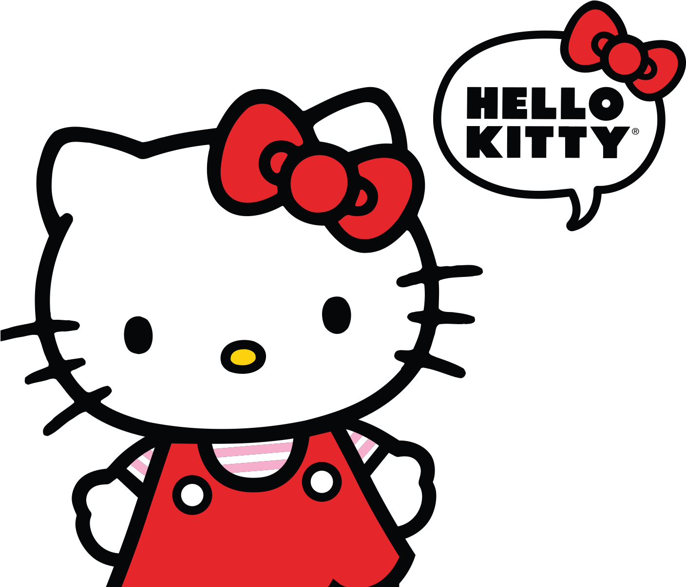
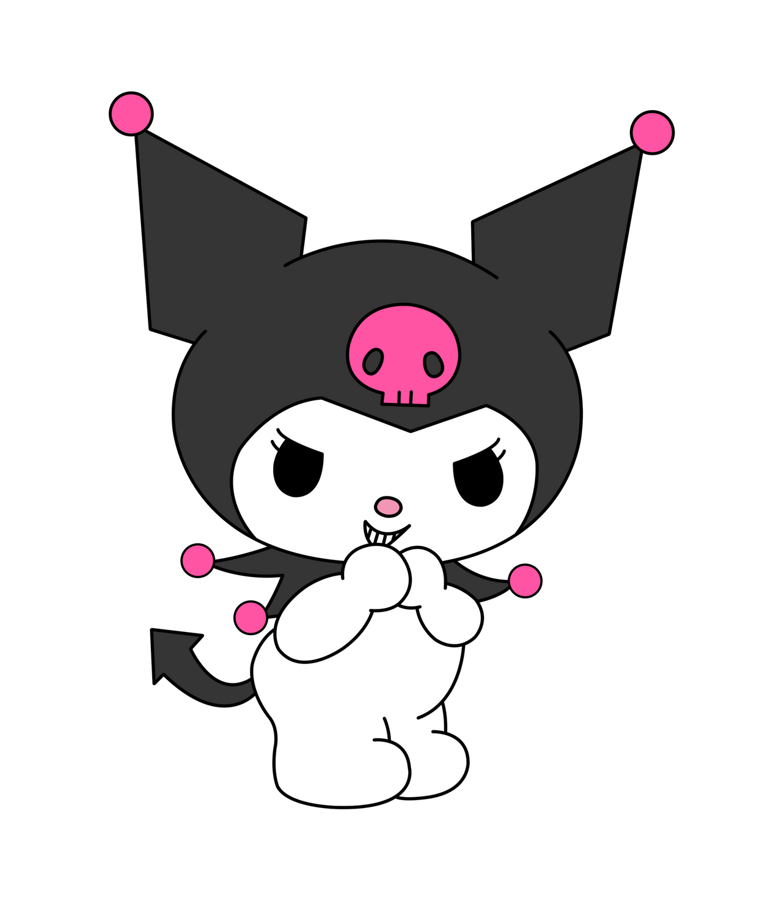

Hello Kitty and Friends
Hello Kitty and Friends é uma websérie de animação americana-brasileira criada por Shaene Siders e pela Sanrio para os canais oficiais do YouTube da Hello Kitty. Possui a animação feita pelo estúdio brasileiro Split Studio. A série é a terceira websérie para YouTube baseada na Hello Kitty, sucedendo O Mundo da Hello Kitty e Hello Kitty Fun. A animação é uma série crossover envolvendo vários personagens da Sanrio, tendo sido feita para celebrar os 60 anos da empresa. Estreou sua primeira temporada em 26 de outubro 2020 originalmente em inglês, tendo sua estreia no Brasil em 2021 primeiramente no app PlayKids e depois no canal oficial da Hello Kitty no YouTube. Atualmente conta com 7 temporadas.
Hello Kitty
A Hello Kitty é uma garota feliz e divertida, que adora espalhar alegria pelo mundo. Ela mora com seus pais e sua irmã gêmea, Mimmy,em Londres, na Inglaterra. Seu lema é: “Muitos amigos nunca são demais!” Por isso, ela está sempre cercada de amigos e adora fazer novas amizades.
My Melody
A My Melody nasceu na floresta de Mary Land. Ela é super legal e faz amizade facilmente. Sua marca registrada é um lindo capuz, que sua avó costurou especialmente para ela.

Kuromi
Kuromi é muito bagunceira e sempre causa confusões. Por trás de sua aparência radical, ela é super feminina. Adora escrever em seu diário e ler romances. Sua cor preferida é a preta. Ela é amiga da My Melody, mas encara essa amizade com uma certa competição.
